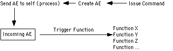
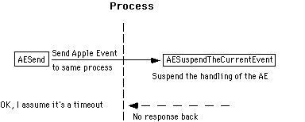

|
|
If an application suspends handling of an Apple event which it sent to itself,
the Apple Event Manager will return errAETimeout as the result of the
AESend call. The event was still sent correctly, however, and the answer (if any)
should appear later in the reply descriptor. However, a problem in system software versions 7.0
and 7.0.1 prevents applications from getting the reply data.
Since MacApp 3.0 suspends handling of the events it receives, the information
in this note is relevant to applications developed with that framework.
[Oct 01 1992]
|
Introduction
Modern Macintosh applications frequently need to send Apple events to
themselves. To take full advantage of AppleScript, an application should be
"factored." A factored application handles a user command by sending itself an
Apple event, and then performs the action in response to the Apple event. This
allows the system to watch and record the actions being performed.

Figure 1. Factored applications using Apple events
It is easy for an application to send an Apple event to itself by using an
address descriptor of type typeProcessSerialNumber with the
lowLongOfPSN field set to kCurrentProcess and the
highLongOfPSN set to 0. Events delivered this way are directly
dispatched: The Apple Event Manager processes these events immediately,
bypassing the event queue and executing the handler routine directly. This
speeds up delivery of the event by evading the Event Manager overhead, and it
avoids situations in which an Apple event sent in response to user interaction
might arrive in the event queue after some event that really occurred later
than the user interaction. For example, if the user chooses Cut from the Edit
menu and then clicks in another window, and the Cut event were to end up in the
queue behind the window activate event, a selection in the wrong window might
be cut.
An application can send events to itself using other forms of addressing, such
as the true process serial number (as returned by GetCurrentProcess.)
Because direct dispatching will avoid event sequence problems, applications
should generally send events to themselves only by using a typeProcessSerialNumber
address descriptor and the kCurrentProcess constant, not by using a true process
serial number or an application signature.
Back to top
Knowing Yourself
The handling of Apple events that are directly dispatched is the same whether
the AESend specifies the mode as kAEQueueReply or kAEWaitReply.
Neither the event nor the reply will be delivered through the event queue. Replies to directly
dispatched events always appear in the reply descriptor.
The event source attribute of an event (a short) can be examined to determine
the kind of dispatch that was used.
pascal OSErr EventDirectFromSelf(AppleEvent * theAppleEventPtr, Boolean
directFlagPtr)
// Extract the event source attribute and check if it indicates that
// the event was directly dispatched.
{
short theEventSource;
DescType actualType;
Size actualSize;
OSErr retCode;
retCode = AEGetAttributePtr(theAppleEventPtr, keyEventSourceAttr,
typeShortInteger, &actualType, (Ptr) &theEventSource, sizeof(short),
&actualSize);
if (retCode == noErr && theEventSource == (short) kAEDirectCall)
*directFlagPtr = true;
else *directFlagPtr = false;
return retCode;
}
|
Back to top
Keeping Yourself in Suspense
If the handling of an Apple event sent by an application to itself is suspended
by a call to AESuspendTheCurrentEvent, the Apple Event Manager will
immediately return from the AESend call with the error code errAETimeout.
This will happen whether the event was sent with the mode kAEQueueReply, kAEWaitReply,
or kAENoReply, even if the timeout parameter is set to kNoTimeOut. The routine
calling AESend should take the timeout error as confirmation that the event was sent.

Figure 2. AESend and suspension of AE handling
As happens with other AESend calls that return with a timeout error,
processing of the event by the handler will nevertheless proceed. The handler's
reply, if any, will be made available to the application in the reply event
when the handling has completed. There will be no notification that the reply
is ready. If no data has yet been placed into the reply event, the Apple Event
Manager will return errAEReplyNotArrived when the application attempts
to extract data from the reply.
Unfortunately, the version of the Apple Event Manager present in system
software versions 7.0 and 7.1 does not allow the reply to be extracted from the
reply record, and continues to return errAEReplyNotArrived. This
should be fixed in a future release of the Apple Event Manager. For now,
applications suspending directly dispatched events cannot retrieve the reply
message.
Back to top
Getting Back to Business
Apple event handlers that suspend an event should not immediately call
AEResumeTheCurrentEvent. Instead, a handler should just return after
suspending the event.
When AEResumeTheCurrentEvent is called for an event that was not
directly dispatched, the event and reply will be disposed (just as
AEProcessAppleEvent usually does when a handler returns.) Be certain
that all processing involving the event or the reply has completed before
calling AEResumeTheCurrentEvent. Do not call AEResumeTheCurrentEvent
for an event that was not suspended.
Back to top
References
Inside Macintosh, Volume VI, Apple Event Manager
Back to top
Downloadables
|

|
Acrobat version of this Note (112K)
|
Download
|
Back to top
|